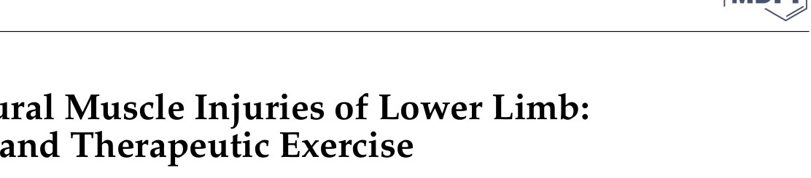
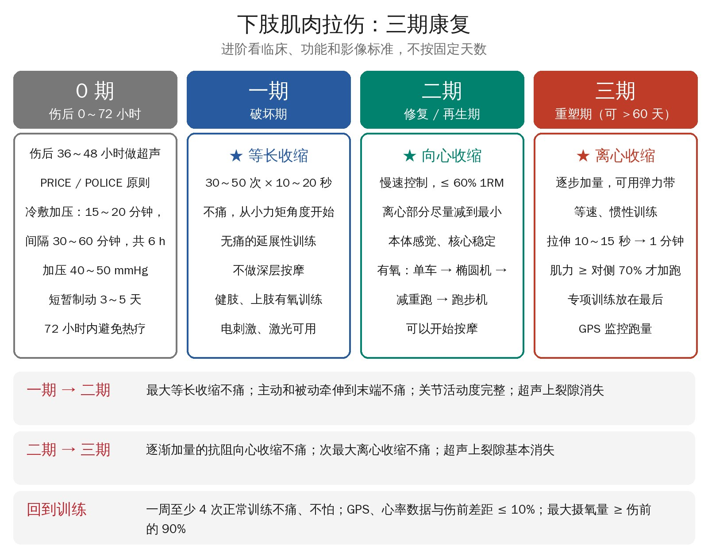
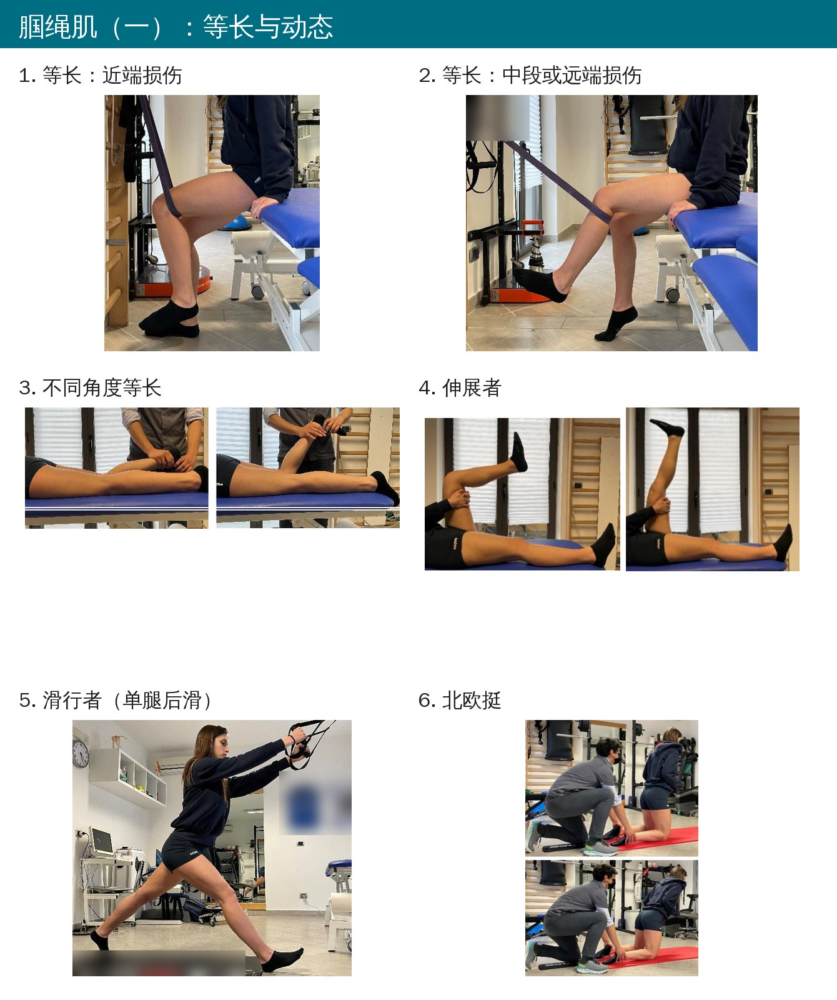
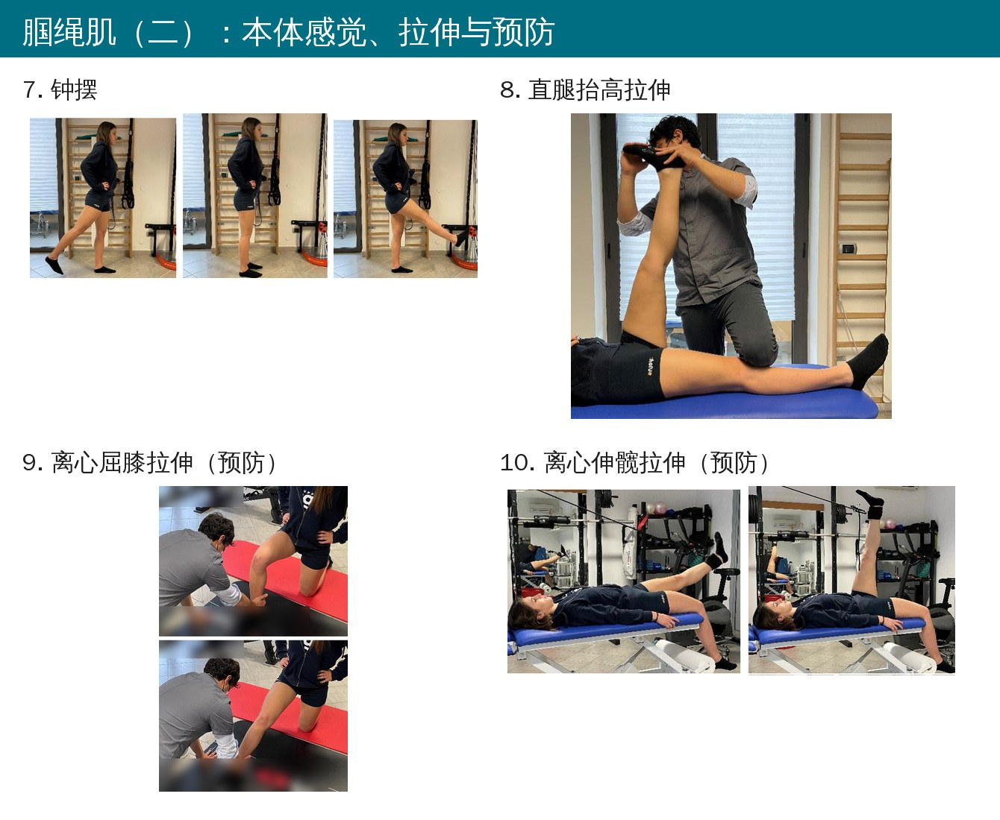
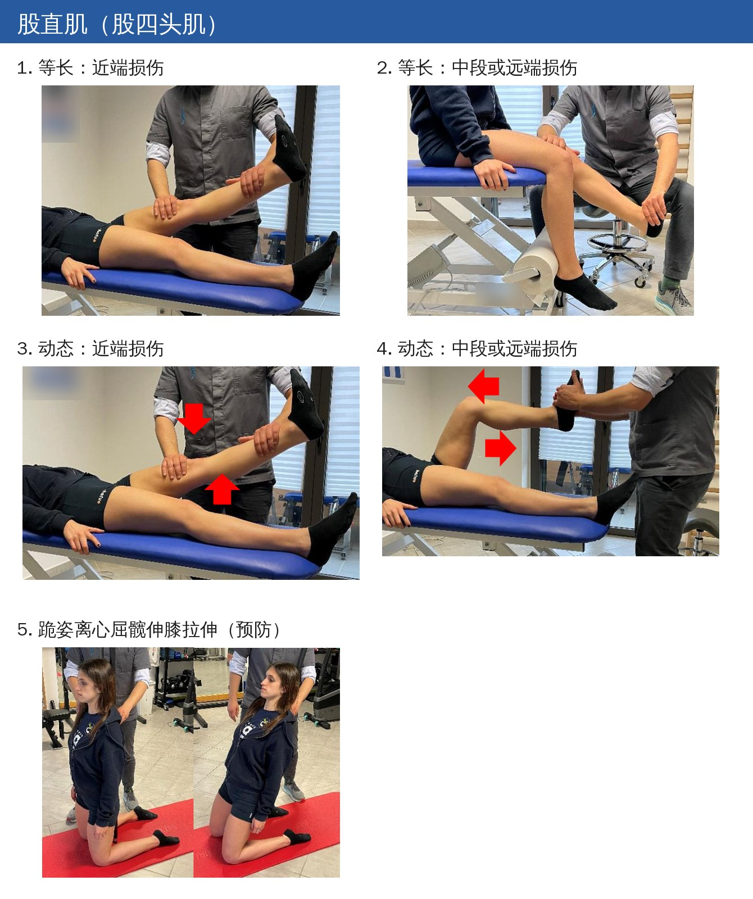
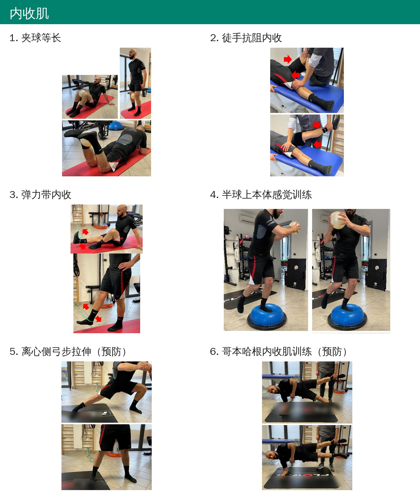
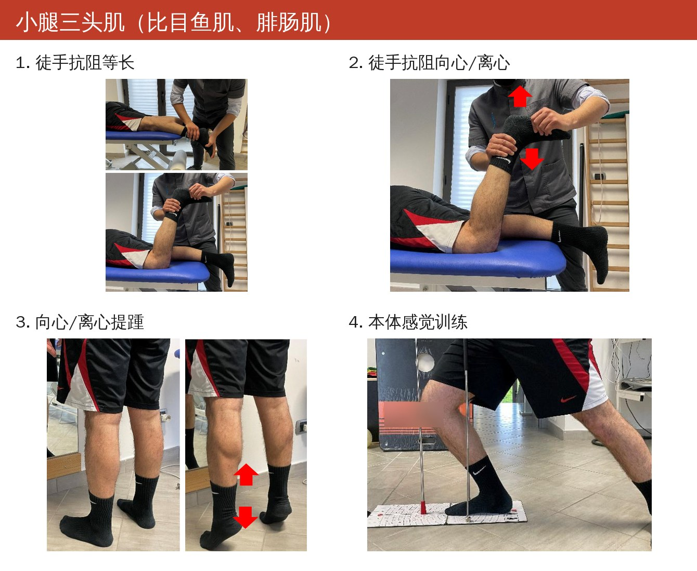

🔖原文标题（J Funct Morphol Kinesiol 2021;6:75，开放获取）
📚 文献信息
▪ Palermi S, Massa B, Vecchiato M, Mazza F, De Blasiis P, Romano AM, Di Salvatore MG, Della Valle E, Tarantino D, Ruosi C, Sirico F. Indirect Structural Muscle Injuries of Lower Limb: Rehabilitation and Therapeutic Exercise. J Funct Morphol Kinesiol. 2021;6(3):75.
▪ 作者主要来自意大利那不勒斯费德里科二世大学公共卫生系
▪ 叙述性综述；DOI：10.3390/jfmk6030075
肌肉损伤是团队和个人项目里最常见的运动损伤，在足球里占了所有伤病的一半。下肢最容易伤的四组肌肉依次是：腘绳肌 ＞ 内收肌 ＞ 股直肌 ＞ 小腿三头肌。
可现实是，很多业余运动员的康复是“医院有什么就做什么”，而不是按证据来。作者也说得很直白：“观望等待”的做法已经被证明无效；各种理疗仪器越用越多，但到底哪个真有用，证据并不一致。
这篇综述按意大利肌肉韧带肌腱学会（ISMuLT）和意大利共识会议的建议，把间接结构性肌肉损伤（俗称“拉伤”“肌肉撕裂”）的保守康复整理成0 期 + 三期，每期写清楚目标、谁来管、在哪练、做什么、什么时候进下一期，最后给了四组肌肉的具体动作和回归测试。
按 ISMuLT 分类，“间接”指不是被撞的，而是在用力收缩时被突然拉长超过极限造成的；“结构性”指肌肉组织真的有了损伤。
表 1 间接结构性肌肉损伤分类
| 严重程度 | 部位 | 组织 | 复发 |
|---|---|---|---|
| 3A：轻度部分撕裂 | P：近端 | MF：肌筋膜 | R0：首次损伤 |
| 3B：中度部分撕裂 | M：中段 | MT：肌腹和肌腱连接处 | R1：第一次复发 |
| 4：次全或完全撕裂、肌腱撕脱 | D：远端 | T：中央肌腱或游离肌腱 | R2：第二次复发 |
| R3：第三次复发 |
• 近端的腘绳肌和股四头肌损伤、远端的小腿损伤预后更差；肌腱连接处的损伤恢复更慢
• 3A、3B 最常见，也是保守康复争议最大的；4 型一般考虑手术
• 影像首选超声：快、便宜、能反复看。核磁只在超声和临床不一致、或精英运动员时用；核磁信号恢复比功能恢复慢，不能拿来决定回归

🔖三期康复总览（按原文内容自绘）
整个方案最重要的一条主线是：一期等长 → 二期向心 → 三期离心，收缩方式要跟组织愈合的阶段对得上。另一条原则是：进阶看标准，不看天数——每期多长，取决于临床检查、功能和超声，而不是“伤后第几周”。
• 伤后 36～48 小时做超声最合适：血肿 24 小时达到最多，48 小时后开始减少
• 按 PRICE（保护、休息、冰敷、加压、抬高）处理，现在更推荐 POLICE，把“休息”换成“适当负荷”
• 冷敷加压：每次 15～20 分钟，间隔 30～60 分钟，共做 6 小时，加压 40～50 mmHg
• 短暂制动或相对制动，但只限前 3～5 天；一般不需要拐杖，贴扎可以帮助固定和引流
• 72 小时内不做任何产热的理疗，以免加重出血
• 24 小时后可以做淋巴引流按摩，把加压绷带换成弹力绷带；脉冲超声、低能量激光的证据很少
目标：处理诱发因素和拮抗肌；日常活动不痛；患肌能无痛地做到理论最大负荷的 50%；延展性恢复到 90%。地点在健身房，由医生和治疗师负责。
• 伤后头 5～7 天瘢痕还很松，最大风险是用力收缩把裂隙拉大
• 所以只做等长收缩：肌丝不滑动、肌肉长度不变。30～50 次，每次 10～20 秒，全程在疼痛阈值以下
• 关节角度要从肌肉产生力矩小的位置开始，再慢慢往力矩大的角度推进
• 做无痛的延展性练习（被动、主动辅助、静态或动态），最好用功能性模式；双关节肌两端都要拉
• 不要做深层按摩；积液没消就继续弹力绷带；血肿大的话在机化前超声引导下抽吸
• 尽早用没受伤的部位做有氧，比如上肢有氧；每次练完冰按摩 15～20 分钟
• 电刺激（TENS、神经肌肉电刺激）从伤后头几天一直用到第 3 周左右；激光证据尚可；扑热息痛可以止痛，不推荐非甾体抗炎药；PRP、干细胞、肌松药证据不足
• 红灯：做力量练习或跑步机慢跑时痛
进入标准：肿胀消退；最大等长收缩不痛；主动和被动牵伸到末端不痛；关节活动度完整；超声上裂隙消失、瘢痕区有肉芽修复组织。
• 开始向心收缩：肌肉缩短时瘢痕区不受牵拉。动作要慢、可控，先徒手抗阻、再用器械，不超过 60% 1RM
• 离心部分尽量减到最小
• 继续延展性练习；开始本体感觉训练（稳定或不稳定平面、加干扰、加认知任务）和核心稳定训练
• 有氧按顺序加：功率车 → 椭圆机 → 减重跑台 → 跑步机
• 这时可以开始按摩
• 目标：练习时不痛、没有“异样感”；延展性完全恢复；专项有氧指标恢复；体重回到伤前。红灯：延展性测试仍阳性
进入标准：逐渐加量的抗阻向心收缩不痛；次最大离心收缩不痛；超声上裂隙基本消失。这一期可能要 60 天以上。
• 以离心收缩为主，强度逐步增加，可以用弹力带；要针对具体肌肉和部位，也要考虑受伤时的动作
• 可加入等速、惯性（飞轮）训练
• 拉伸逐渐加入，从 10～15 秒延长到 1 分钟，不能引起疼痛
• 患肌力量至少恢复到伤前或对侧的 70%，才加大跑量，最好有 GPS 监控
• 专项动作放在这一期的最后，小心加入
• 红灯：训练中或训练后肌肉有“不一样”的感觉
原文给了四组肌肉的示范动作，同样遵循等长 → 动态 → 本体感觉与拉伸 → 预防的顺序。

🔖原文表 2 腘绳肌（一）
• 等长：坐位，用弹力带或治疗床做屈膝等长。近端损伤时小腿往后收的角度小，中远端损伤时膝更伸直；再在不同角度做等长
• 动态：伸展者（仰卧抱住大腿，主动伸膝）、滑行者（手拉悬吊带，一腿向后滑）、北欧挺

🔖原文表 2 腘绳肌（二）
• 本体感觉：单腿站立，另一腿前后摆动（钟摆）
• 拉伸：治疗师辅助直腿抬高
• 二级预防：离心屈膝拉伸、离心伸髋拉伸

🔖原文表 3 股直肌
• 等长和动态都分两种：近端损伤时仰卧、髋伸直位练伸膝；中远端损伤时坐位练
• 二级预防：跪姿，躯干后仰，对股直肌做离心屈髋、伸膝拉伸

🔖原文表 4 内收肌
• 等长：仰卧、站立或俯卧夹球
• 动态：徒手抗阻内收、弹力带内收
• 本体感觉：半球上单腿站加抛接球
• 二级预防：离心侧弓步拉伸、哥本哈根内收肌训练

🔖原文表 5 小腿三头肌
• 等长：俯卧屈膝和伸膝位，徒手抗阻跖屈（屈膝时更偏比目鱼肌）
• 动态：徒手抗阻向心/离心，然后过渡到提踵
• 本体感觉：弓步位的平衡练习
回归训练（RTT）的一般标准：
• 没有症状，触诊不痛
• 被动和主动牵伸都不痛；等长、向心、离心收缩都不痛
• 完成规定的康复方案；参考超声和核磁；也要听运动员自己的感受
回归比赛（RTP）前，建议至少一周、4 次以上正常训练，没有疼痛、不适或害怕，同时用 GPS 和心率监控：与伤前数据相差超过 10%，就推迟回归；最大摄氧量最好恢复到伤前的 90% 以上。
表 6 各肌群的回归测试
| 肌群 | 专项检查 | 实验室测试 | 场地测试 |
|---|---|---|---|
| 腘绳肌 | 被动直腿抬高；动态柔韧性 H 测试 | 测力（等长、等张、等速） | 伊利诺伊敏捷测试；急停测试；倒退跑 |
| 股四头肌 | 被动股四头肌牵伸测试 | 测力；同步测力板测试 | 伊利诺伊敏捷测试；急停测试；踢球测试 |
| 内收肌 | 耻骨应力测试；抗阻内收测试；挤压测试；被动牵伸测试 | 内收肌测力 | 踢球测试；交叉步（卡里奥卡）测试 |
| 小腿三头肌 | 提踵测试；踝关节柔韧性测试 | 测力；同步测力板测试；跳深测试 | 伊利诺伊敏捷测试 |
具体怎么测，原文没有展开，需要查对应的参考文献。
• 叙述性综述，没有检索策略和质量评价，主要依据意大利的分类和共识，很多推荐本身是专家意见
• 作者自己也承认，PRICE 没有高质量随机对照试验支持，大部分理疗（超声、激光、热疗、冲击波等）证据都很弱
• “一期等长、二期向心、三期离心”是原则，不是试验验证过的最优方案；作者也提到有人主张更早引入离心，比如腘绳肌的 L-protocol
• 动作表只有名称和照片，没有组数、次数、负荷和进阶参数；回归测试也只列了名字
• 部分数字缺少出处或依据：比如“一期延展性恢复 90%”“RTP 数据差距 10% 是人为设定”；电刺激能促进干细胞迁移的证据主要来自动物研究
这篇最大的价值是给了一个清楚、好执行的框架：先分型（程度、部位、组织、复发），再按“等长 → 向心 → 离心”分期推进，每次进阶都用“这一种收缩做到最大还痛不痛”来判断，配合超声复查。
几个容易被忽略的细节值得记住：72 小时内不要热疗；一期不要深层按摩；二期向心收缩不超过 60% 1RM；力量没到对侧 70% 别急着加跑；回归前至少完整练一周。
欢迎关注骨科康复小黄公众号，获取更多物理治疗的专业知识！
📄参考文献：
Palermi S, Massa B, Vecchiato M, Mazza F, De Blasiis P, Romano AM, Di Salvatore MG, Della Valle E, Tarantino D, Ruosi C, Sirico F. Indirect Structural Muscle Injuries of Lower Limb: Rehabilitation and Therapeutic Exercise. J Funct Morphol Kinesiol. 2021;6(3):75. doi:10.3390/jfmk6030075
原文以 CC BY 4.0 协议开放获取。动作照片来自原文表 2～5（器材上的英文商标已模糊），三期总览图为编者按原文绘制，仅用于学术交流。